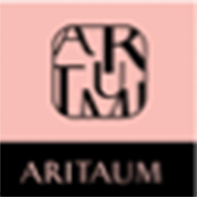

2015년 하반기 아리따움 강일점 만족도 설문조사
설문행사에 답해주시는 고객 여러분께 추첨을 통하여 소정의 상품을 증정합니다.
Q1. 귀하의 연령대는 어디에 해당되시나요?
10대 이하
20대
30대
40대
50대
60대 이상
Q2. 귀하의 거주 지역은 어디십니까?
강일리버파크
고덕리엔파크
그외 지역
Q3. 귀하는 현재 아리따움 강일점에서 주로 어떤 제품을 구매하십니까? (중복선택가능)
기초제품
메이크업 제품
헤어제품
바디제품
네일제품
향수
Q4. 나는 제품 구입 시 주로 가는 매장만 가는 편이다.
그렇다
근처 가까운데 아무 곳이나 간다.
Q5. 아모레퍼시픽 제품을 구매할 때 가장 많이 이용하는 곳은 어디인가요?
아리따움 매장
홈쇼핑
인터넷 쇼핑몰
이마트, 롯데마트, 백화점
방문판매
종합화장품 가게
Q6. 제품 구매 시 가장 영향을 미치는 요인은 무엇인가요? (중복선택 가능)
지인 권유
샘플지급
판매사원
브랜드 인지도
사용후기
사용 경험
할인기간(멥버쉽 데이)
Q7. 기능성 화장품 중에서 구매를 원하거나 선호하는 제품은 무엇인가요?
미백 화장품
주름개선 화장품
자외선 차단제
주름+미백 멀티제품
Q8. 아리따움 강일점 매장의 청결도 만족도는 어느 정도 인가요?
매우 만족
대체로 만족
보통
불만족
매우 불만족
Q9. 아리따움 강일점 직원의 응대 태도는 어떤가요?
매우 만족
대체로 만족
보통
불만족
매우 불만족
Q10. 아리따움 강일점 외 타 아리따움 매장을 방문하신다면 그 이유가 무엇인지요?
Ex) 제품이 없어서, 제품 카운셀링이 부족해서, 직원의 불친절, 샘플 등
Q11. 아리따움 강일점에 바라는 점이 있으면 자세히 적어주세요.
적극적으로 개선노력 하겠습니다.
이 름 :
핸 드 폰 :
등 록